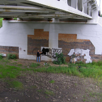
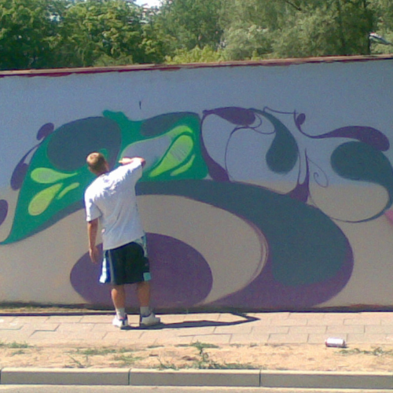

graffiti art
It started back in 1993 and almost 30 years later I still can't resist.
Obviously these days it's all done in designated areas. However I'm certain that preparing sketches and then painting the walls with spray cans or brush has helped me to develop skills necessary to be creative in all aspects of graphic design.